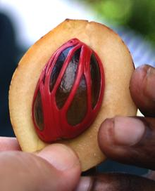

Shown in the photo are whole nutmeg seeds, a seed broken open, mace from around the seed, and of course our ever-present red kidney bean for scale. The fruit surrounding these seeds is easily bruised and perishable so is used only in regions where nutmeg is grown.
More on Spices.
 Nutmeg did not appear in Europe until the 11th century, brought by Arab traders, but was at first used only to flavor beer. By the 15th century it had become a very prestigious (and expensive) spice used in all manner of dishes.
Originally nutmeg grew only on tiny Run Island, one of the Banda islands of Indonesia. The Dutch and English fought several nasty wars over this island but a settlement was finally reached in 1668. The Dutch abandoned to Britain a colony called New Amsterdam (which the British had illegally occupied and renamed New York). In return the Dutch got Run Island and a monopoly on nutmeg - which made the Dutch East India Company very wealthy indeed.
There are two other members of genus Myristica that are used commercially - both as adulterants to true nutmeg. Both are easy to tell from true nutmeg if whole, as both are acorn shaped rather than spherical or oval. M. malabarica is grown on the Malabar coast of India and lacks flavor but is being studied as a powerful medicinal. M. argentea is grown in New Guinea and is said to have a pungent wintergreen-like flavor. Nutmeg fraud is nothing new - Connecticut has been called the "Nutmeg State" and it's people called "Nutmeggers" due to an alleged practice of carving (and selling) wooden nutmegs.
Shown in the photo (taken in Zanzibar) is an entire fruit split open to show
flesh, mace and nutmeg seed.
Photo by Mila Zinkova distributed under license
Creative Commons
Attribution-Share Alike 2.5 Generic.
While nutmeg is no longer used in the quantity it was in Medieval Europe when it was really, really expensive, it does appear in many European recipes. It is still widely used in Holland for vegetable dishes and throughout Europe as the main flavoring for Bechamel and cheese sauces - as well as in holiday egg nog and other beverages.
Nutmeg is used in the Mughlai cuisine of northern India (and is said to sometimes be smoked in India). It sees considerable use in savory Middle Eastern dishes and in Greece and Cyprus. The Italians use it with cheese and spinach stuffed pastas and it sees similar usage in France.
BWP grade (broken, wormy and punky) nutmegs are legally used only for distillation of oil and extraction of oleoresins, but some unscrupulous producers grind them and sell them as ground nutmeg. This presents a danger of molds and aflatoxin poisoning - yet another reason to buy your nutmegs whole.
Mace consists of a leathery "arillus" between the seed kernel and the fruit itself. The flavor of mace is similar to nutmeg but lighter and more fruity. It is usually called for in lighter flavored dishes and the stronger, sweeter nutmeg in sweeter and more robustly flavored dishes. One complete arillus is called a "Blade".
When the fruit is completely ripe it will split as shown in the photo.
This is the point where it is normally harvested. Given time to dry out
the fruit becomes a hard black shell.
Nutmeg Butter is produced by pressure, producing a semi-solid that can
replace cocoa butter, but has a distinct nutmeg flavor. It is also mixed
with other fats and has applications as an industrial lubricant.
Nutmeg is a mild hallucinogen, but is not popular for that use. Among problems are the large dosage (about 1/2 nutmeg seed) and serious side effects caused by other components (the hallucinogens are harmless). These include unpleasant flavor, extreme nausea, rapid heart beat, dizziness, dry mouth, constipation, difficulty urinating, dehydration, body pain, visual distortion, anxiety and panic.
Amounts used in culinary practice are far too small for any adverse effects to be felt, except perhaps by those who have used nutmeg as a hallucinogen and end up hypersensitive to nutmeg.
Nutmeg was once thought to be an abortifacient and can theoretically cause harm to a fetus, but in the quantities used in today's culinary practice this is quite unlikely.